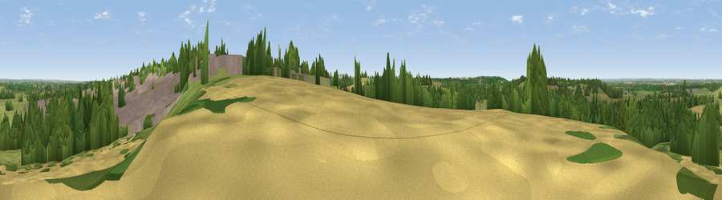

Hampton Hill
#25049 in England · top 40% of its area beats it · near HighworthThe view, rendered

A 360° render of this exact spot computed from the terrain model, tree cover and land cover — summer colours, afternoon light, calibrated against photographs of famous viewpoints. Real trees, hedges and buildings will differ in detail.
The panorama
Grey silhouette: terrain skyline in each direction (720 bearings, Earth curvature and refraction included). Dashed green: skyline with trees (+15 m) and buildings (+8 m) as obstacles. Blue strip: how far the ground is visible on each bearing.
Where the view opens
Wedge length = distance to the farthest visible ground on that bearing (vegetation-aware). Rings at 10, 25 and 50 km.
What fills the view
33% grassland · 27% cropland · 24% woodland · 15% built-up
Angular shares of the visible panorama (visual magnitude), not map area. Landscape diversity 0.59 (0–1 Shannon).
Key numbers
More beautiful places nearby
The staircase of upgrades: each row has a higher view potential than everything closer. Driving times are estimates from straight-line distance, calibrated against real road routing — check an actual route before setting out.
| Place | Direction | Drive | Score |
|---|---|---|---|
| Viewpoint near Broad Blunsdon | WSW · 4 km | ~9 min | 53.6 |
| Viewpoint near Coleshill | ENE · 5 km | ~11 min | 54.9 |
| Badbury Hill | ENE · 7 km | ~15 min | 57.4 |
| Folly Hill | ENE · 11 km | ~21 min | 69.5 |
| Charlbury Hill | SSE · 11 km | ~21 min | 70.9 |
| Viewpoint near Woolstone | ESE · 12 km | ~23 min | 76.7 |
| Martinsell viewpoint | S · 29 km | ~45 min | 77.3 |
| Viewpoint near Leckhampton | NW · 36 km | ~54 min | 77.8 |
51.63026, -1.72302 · source: osm peak · position refined by local search. Computed location — check access rights before visiting.